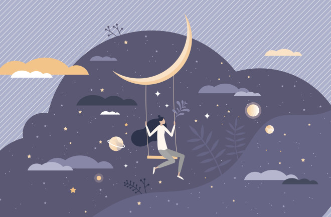

Riittävä uni
Unen tarve on yksilöllistä. Keskimääräinen yöunen pituus aikuisella vaihtelee tavallisesti 6–9 tunnin välillä.
Lue lisääUnen tarve on yksilöllistä. Keskimääräinen yöunen pituus aikuisella vaihtelee tavallisesti 6–9 tunnin välillä.
Lue lisääTutkimusten mukaan REM-uni saattaa olla avainasemassa muistiin ja aivojen virkistymisessä.
Sen aikana nähdään suurin osa unista.
Lue lisääSuurin osa unesta kuuluu tähän vaiheeseen, jossa lihastoiminta vähenee ja kehon lämpötila laskee.
Vaikka sitä kutsutaan joskus kevyeksi uneksi, se on yhtä olennainen kuin mikä tahansa muu vaihe.
Lue lisääTämän myös hidasaaltoiseksi uneksi kutsutun vaiheen aikana keho voi korjata itseään ja erittää välttämättömiä hormoneja. Sitä esintyy pitempinä jaksoina yön nesimmäisellä puoliskolla. Syvästä unesta on usein vaikea herätä, koska olet hyvin rentoutunut.
Lue lisääNukahtamiseen kuluu aikaa, ja heräilemme ajoittain pitkin yötä. Tämä aika näkyy kaavoissa Hereillä-jaksoina.
Lue lisääUnihäiriöt ovat lisääntyneet Suomessa yhteiskunnallisten ja teknologisten muutosten sekä työelämän uusien vaatimusten myötä.
Lue lisää